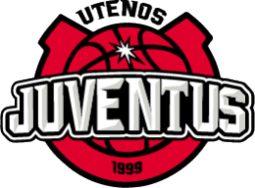

Utenos „Juventus“

Įkūrimo data:
2000
Vyr. treneris:
Žydrūnas Urbonas
Dabartinė komandos sudėtis
- Miller, Patrick
- Airington, Jaylin
- Lekūnas, Tomas
- Matulis, Gintautas
- Vaitkus, Ignas
- Žvirblis, Martynas
- Šukšta, Redas
- Giga, Norbertas
- Gecevičius, Martynas
- Sederevičius, Ernestas
- Gustys, Rokas
- Delininkaitis, Tomas
- Šulskis, Vytautas